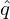
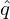
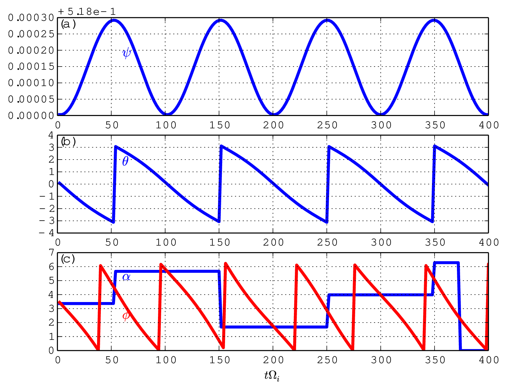
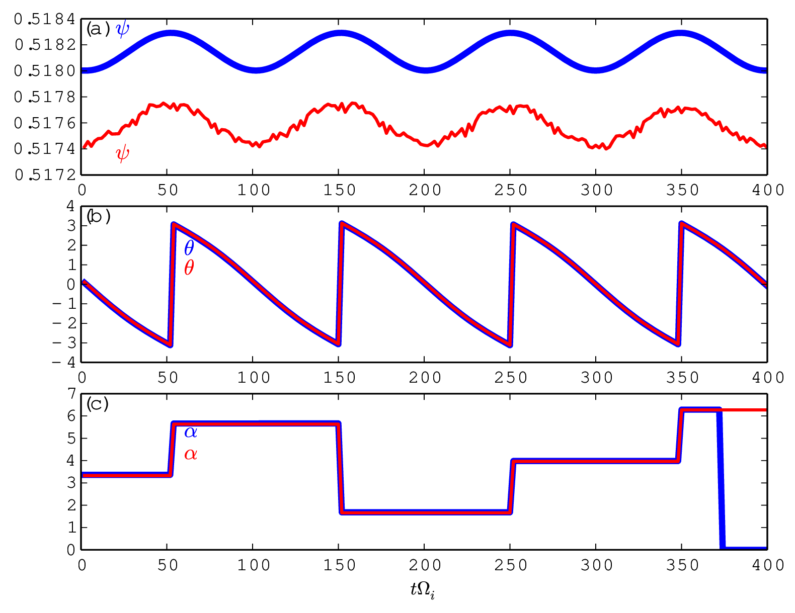
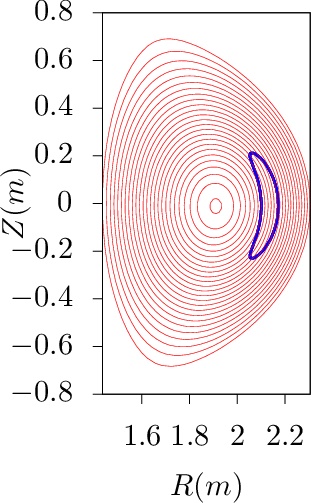
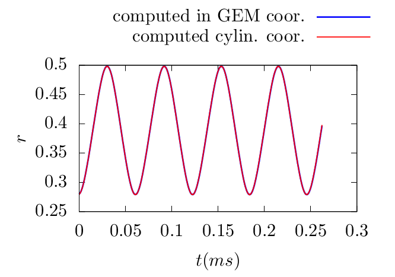

d𜃠and
d𜃠and  = B ⋅∇ϕ∕(B ⋅∇𝜃), which is the local safety factor. The time
evolution of (ψ,𝜃,α) of a guiding-center is then written as
= B ⋅∇ϕ∕(B ⋅∇𝜃), which is the local safety factor. The time
evolution of (ψ,𝜃,α) of a guiding-center is then written as
Consider the ï¬eld-line-following coordinates (ψ,𝜃,α), where α is the generalized toroidal angle deï¬ned
by α = ϕ −δ with δ = ∫
0𜃠d𜃠and = B ⋅∇ϕ∕(B ⋅∇𝜃), which is the local safety factor. The time
evolution of (ψ,𝜃,α) of a guiding-center is then written as
|
| (14) |
and similarly
|
| (15) |
 | (16) |
Using the expression of dX∕dt given by Eq. (10), Eqs. (14)-(16) can be written as (presently dropping the E × B drift, which will be discussed later):

|
| (20) |
For a general tokamak magnetic conï¬guration speciï¬ed numerically, all the above 2D equilibrium quantities are computed by interpolating pre-computed numerical tables. We deï¬ne the following numerical tables:
|
| (21) |
|
| (22) |
|
| (23) |
|
| (24) |
 | (25) |
 | (26) |
|
| (27) |
 | (28) |
 | (29) |
 | (30) |
Next, let us discuss the E × B drift:
|
| (31) |
|
| (32) |
 | (33) |
Using δE = δE∥b + δEx∇x + δEy∇y, where x = ψ and y = α, the above drifts are written as


Note that 𝜃(r) and ϕ(r) are multi-valued functions whereas ∇𝜃(r) and ∇ϕ(r) happen to be
single-valued functions. However ∇α(r) and ∇δ(r) are still multi-valued functions. [It is ready to see
this by examining the special case that 𜃠is a straight-ï¬eld line poloidal angle, in which δ = ∫
𝜃ref𜃠d𜃠is
simpliï¬ed to q𝜃. Then ∇δ is written as
d𜃠is
simpliï¬ed to q𝜃. Then ∇δ is written as
|
| (37) |
where the ï¬rst term 𝜃∇q is a multi-valued function since 𜃠is multi-valued.]
For multi-valued functions, if a single branch is chosen, then there will be discontinuity at the the
branch cut. In numerically constructing the coordinates (ψ,𝜃,α), the principal value of 𜃠is chosen in
the range [−π : π) and the branch cut for 𜃠is chosen on the high-ï¬eld-side midplane. The toroidal shift
δ = ∫
𝜃ref𜃠d𜃠can be considered as a derived angle based on 𜃠and thus its principal value and branch
cut are determined by those of 𝜃.
d𜃠can be considered as a derived angle based on 𜃠and thus its principal value and branch
cut are determined by those of 𝜃.
The (ψ,𝜃,α) coordinates of a particle change continuously when we evolve them by integrating Eqs.
(14)-(16), during which 𜃠can move beyond [−π,π). When a particle’s 𜃠moves beyond the range
[−π : π), one or multiple ±2π shifts are imposed on 𜃠until 𜃠are within [−π : π). Note that a
corresponding shift in α is needed to keep the particle at the same spatial location when doing the 𝜃
shift. This is because, although (ψ,𝜃,ϕ) and (ψ,𜃠− 2mπ,ϕ) correspond to the same spatial location,
points (ψ,𝜃,α) and (ψ,𜃠− 2mπ,α) do not, where m is an integer. Speciï¬cally, the usual
toroidal angle ϕ of point (ψ,𝜃,α) is ϕ1 = α + ∫
𝜃ref𜃠d𜃠while ϕ of point (ψ,𜃠− 2mπ,α) is
ϕ2 = α + ∫
𝜃refğœƒâˆ’2mπ d𝜃. The difference between ϕ1 and ϕ2 is ϕ2 −ϕ1 = −2mπq. This indicates that, to
keep the point at the same spatial location when shifting 𜃠by −2mπ, α should be shifted
by +2mπq, i.e., the new coordinates of the point should be (ψ,𜃠− 2mπ,α + 2mπq). This
process is illustrated in Fig. 1. A typical evolution of (𝜃,α) involving shifting is shown in Fig.
2.
d𜃠while ϕ of point (ψ,𜃠− 2mπ,α) is
ϕ2 = α + ∫
𝜃refğœƒâˆ’2mπ d𝜃. The difference between ϕ1 and ϕ2 is ϕ2 −ϕ1 = −2mπq. This indicates that, to
keep the point at the same spatial location when shifting 𜃠by −2mπ, α should be shifted
by +2mπq, i.e., the new coordinates of the point should be (ψ,𜃠− 2mπ,α + 2mπq). This
process is illustrated in Fig. 1. A typical evolution of (𝜃,α) involving shifting is shown in Fig.
2.
Â

Â
Â

Â
When α exceeds the range [0 : 2π], one or multiple ±2π shifts are imposed on α until α are within [0 : 2π]. Since, for ï¬xed ψ and 𝜃, the generalized toroidal angle α is equivalent to the usual toroidal angle ϕ. No complication like the case of 𜃠arises when doing the α shift.
One way of avoiding the subtle (𝜃,α) shift problem is to evolve particles’ ϕ, instead of α. In this case, we have
To verify code implementation, two methods are used to compute the guiding-center orbits. The ï¬rst method uses the cylindrical coordinates and then interpolate the orbits into magnetic coordinates using pre-computed mapping table between the cylindrical and magnetic coordinates. The second method directly uses the magnetic coordinates in pushing the orbits. The following ï¬gures compare the results obtained by these two methods, which indicates they agree with each other. This provides conï¬dence on the correctness of the numerical implementation.

Â
Â
Â
 
 d𝜃, where ϕ is the
usual cylindrical toroidal angle.
d𝜃, where ϕ is the
usual cylindrical toroidal angle.Â
Â
Â
Â


 
Â